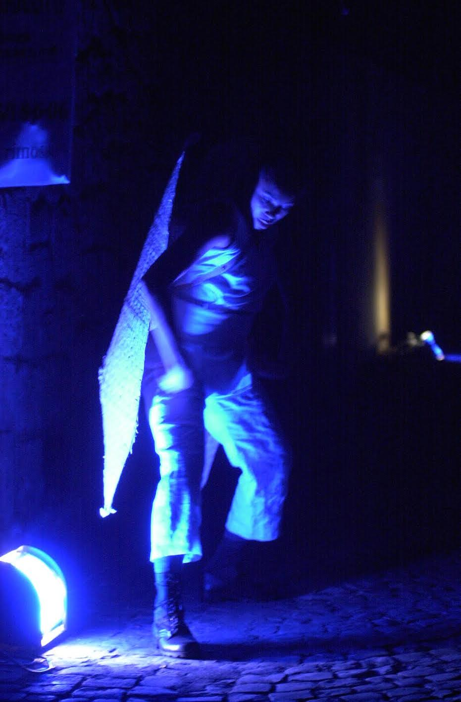
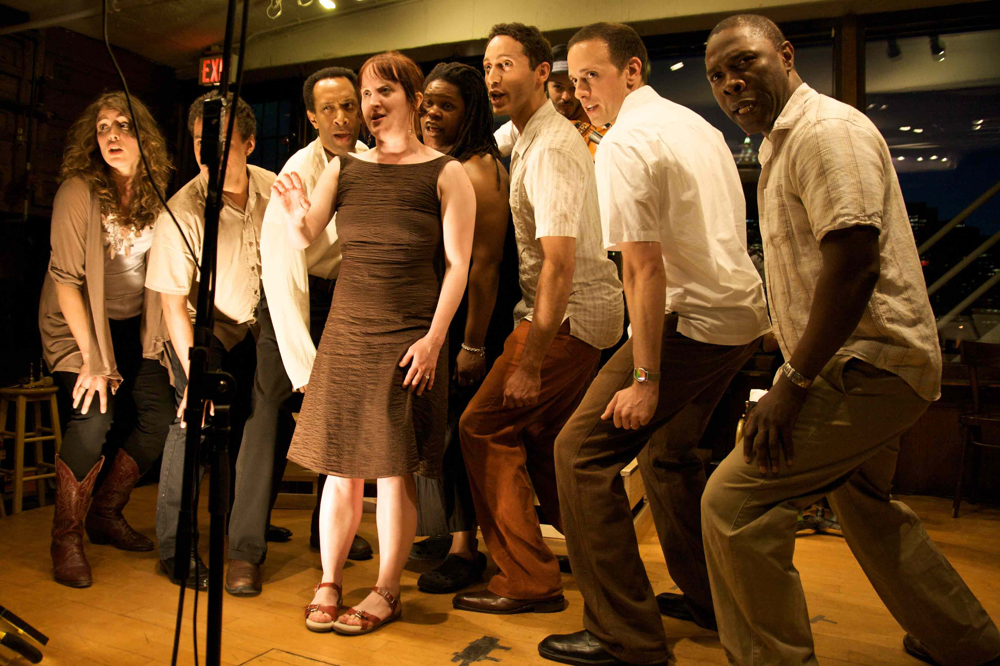

Whether in Orvieto, Italy at Corpus Domini (where Colombari established a new tradition of theater) or in New York City at the time of Christmas, Strangers and Other Angels re-imagines the medieval mystery play for the 21st century. It is community theater in the deepest sense in its celebration of the abundance of human presence in global and local communities. In New York STRANGERS radically mines the Christmas story by extending the frame of the popular Second Shepherds' Play as retold in vernacular American slang. In Orvieto the piece mines the dialogue between human and divine through a frame of 5 or 6 plays played out in vernacular Italian.
Just as the medieval cathedral engaged the talents of countless artists and artisans, so the architectural frame of STRANGERS freely incorporates a vast array of artists: 1) original music featuring gospel, jazz and classical; 2) visual artists interested in performance; 3) text from the cannon, James Weldon Johnson, Zora Neale Hurston, Dante, Pope John Paul II, Walt Whitman, et al; 4) text from contemporary writers, the likes of Eric Ehn, Carl Hancock Rux, Mark Stevick, et al.
STRANGERS AND OTHER ANGELS in New York, or STRANIERI E ALTRI ANGELI in Orvieto involves a vast array of performers: opera singers, actors, step-dancing and tap-dancing angels, instrumentalists including steel drummers, accordionists, trombonists, guitarists, etc and designers interested in on-location participation.
STRANGERS AND OTHER ANGELS takes the play to its audience in the streets, winding inside and outside, using the city as stage, gathering the crowd along the way as it progresses. The performance culminates with a celebratory dance, involving the entire company and audience and signaling the arrival of food and drink for all to share.
Ultimately STRANGERS aims to create a new holiday tradition by ushering in the abundance of the season while challenging its commercialization with a performance that is a gift in itself.
MORE OR LESS I AM is a music-theater piece drawn entirely from Walt Whitman’s 1855 Song of Myself. Conceived and directed by Karin Coonrod with original music by Colin Jacobsen, Kyle Sanna and Eric Jacobsen, the piece involves 16 performers from the Americas: six instrumentalists, six actor/singers (including Michael Potts, Elliot Villar and Jorge Rubio), one mezzo soprano, one gospel singer, one child, one older child and several members of the audience. The piece is played in site-specific locations free of charge to its public.
MORE OR LESS I AM speaks-sings aloud and embodies the voice of Walt Whitman: to experience our individual greatness and our great commonality. Like Lincoln after him, Whitman takes the vision of America to a new level: a place we are still reaching for today. MORE OR LESS I AM vitalizes Whitman’s call to us, then and now, a declaration of interdependence, an awakening of the American consciousness.
MORE OR LESS I AM serves the American community not only because it involves diverse artists but also by the very challenge of our own New York poet, a challenge to be a New Yorker, American, democratic, full. We believe it is not enough in our time to read Whitman alone in our rooms, but we must experience the words together out loud in community. The times demand it and we are standing up to the call. Here is our audacious Walt Whitman, American poet laureate who articulates the enormous diversity of these Americas. Let us get back to our soul and cut a deep mark together. As Whitman says: “I speak the password primeval….I give the sign of democracy/By God! I will accept nothing which all cannot have their counterpart of on the same terms.”
EVERYTHING THAT RISES MUST CONVERGE from a story of the same title by Flannery O'Connor and created for the stage by Karin Coonrod is a tragic-comic interracial seat-shifting dance by whites and blacks on a moving bus in America's deep south. Playing and speaking out the text verbatim, eight Colombari actors with razor-sharp precision create all the characters and all the narration. Georgia's red earth is slammed up against the eternal. O'Connor's voice spread out across the company of actors carries the power of apocalyptic comedy right into the audience.
THE WORLD IS ROUND IS ROUND IS ROUND is a music theater piece adapted from Gertrude Stein's story The World Is Round for children and philosophers. Adapted and directed by Karin Coonrod with music by Gina Leishman, TWIRIRIR brings into tension the question of identity with the roundness of the whirling world, calls its listener into deep seeing, its seer into deep listening. The story's community includes nine-year-old Rose, her cousin Willie and the various animals--wild and domesticated--surrounding them. Rose raises simple penetrating questions of identity: "…but would she have been she used to cry about it would she have been Rose if her name had not been Rose." It is a journey play in which Rose battles the darkness and climbs the mountain into a new awareness. The play is played by a company of five women (all Rose at one time or another) and one musician.
GIULIA/JULIET is a Job-like riveting 75-minute solo work by András Visky. A woman's enduring love is tested while she is imprisoned with her children with no likelihood of survival. Giulia/Juliet documents the true story of the parents of Transylvanian playwright Visky. In 1939, his father fled Romania for Hungary, where he was to meet his future wife. After World War II, they decided to return to Transylvania, by then a part of Romania. There, Visky's father, a pastor in the Protestant Reformed Church, was sentenced to 22 years in prison for the crime of 'organization against socialist public order' and his wife and seven children were deported to a Romanian gulag a thousand kilometers from their home. Visky was only two years old at the time. In 1964, his father and other political prisoners were released during a short-lived period during which the regime relaxed its repressive policies. Visky himself was released the same year along with his mother and siblings.